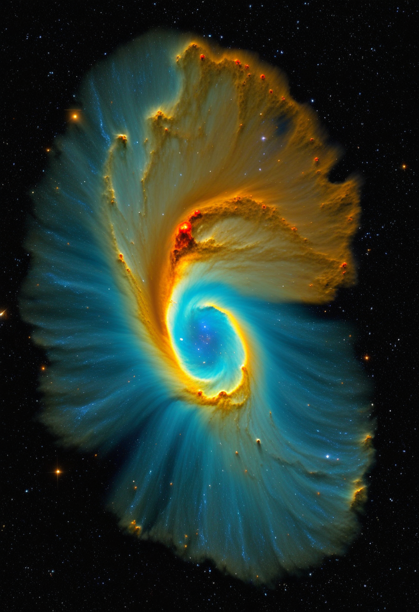
水曜日の便り。本日2026年6月24日、ESAのユークリッド宇宙望遠鏡が第2回クイックデータリリース（Q2）を公開した。銀河系の中心付近、星々が最も密集するバルジ領域の4.8平方度を史上最高解像度で捉えたデータが世界の研究者の手に届いた。系外惑星を重力マイクロレンズで探索するための「宇宙の地図帳」の解禁だ。同じ日にエボラDRCは確認例1,003例を突破し、エボラ史上2番目の大規模発生が正式に確認された。SMAの世界ではアピテグロマブのFDA判定まで3ヶ月と迫り、新生児スクリーニングが命を早くつかむことを改めて示した。Neuralink・Synchron・Tobiiが「研究段階」から「製品化段階」へとシフトし、医療デジタルツインの倫理論議が国際的に深まっている。命の危機と宇宙への跳躍が交差する水曜日。
ESAとEuclid Consortiumが本日2026年6月24日、第2回クイックデータリリース（Q2）を公開した。2025年3月23日に取得した銀河中心付近4.8平方度のデータを収録し、重力マイクロレンズ法による系外惑星探索において史上最高解像度のベースラインとなる。前景ホスト星の直接同定が可能になり、惑星質量の直接測定につながる。NASAローマン宇宙望遠鏡（「銀河バルジ時間領域調査」、2027年以降に同領域を5年間モニタリング予定）との相乗効果も期待される。本格コスモロジーデータリリース（暗黒エネルギー・暗黒物質マッピング）は2026年10月予定。ユークリッドが描く宇宙の地図帳が、一枚ずつ人類の前に広げられていく。
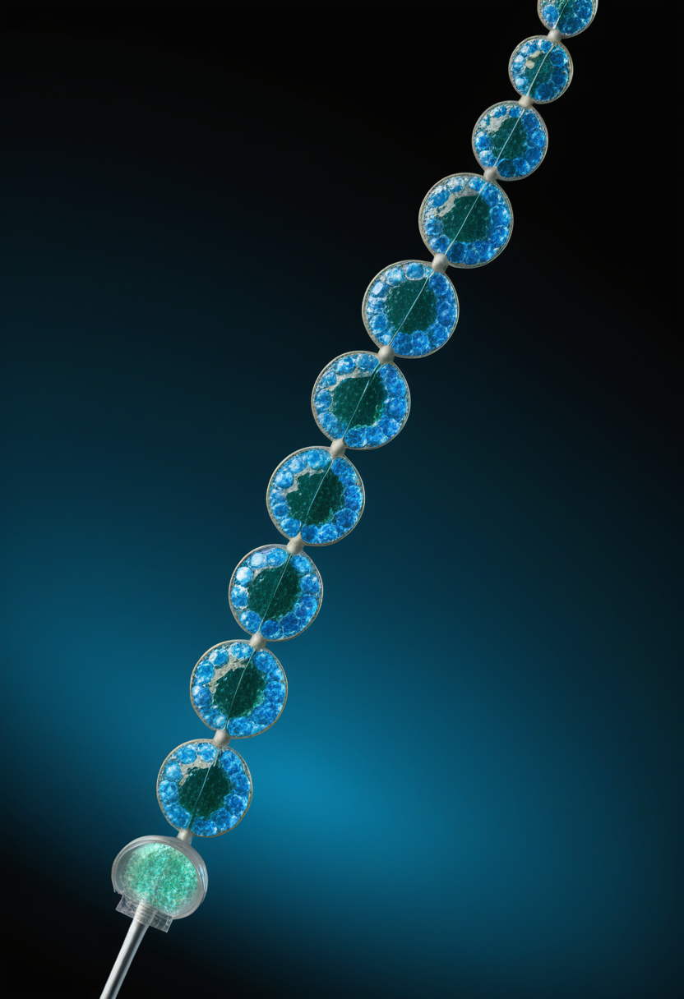
Scholar RockがFDAにBLA（生物製剤承認申請）を再提出し受理。PDUFA判定日は2026年9月30日——本日時点でちょうど3ヶ月後に迫る。Phase 3 SAPPHIRE試験では主要エンドポイントを達成し、既存SMN標的療法（ヌシネルセン・リスジプラム）との併用で運動機能の有意な改善を示した。承認されれば2026年末にも米国で利用可能となる見通し。ファストトラック・希少疾患・優先審査・小児稀少疾患の4指定を付与済み。EMAのMAA審査も進行中で欧州承認決定は2026年中頃の見込み。
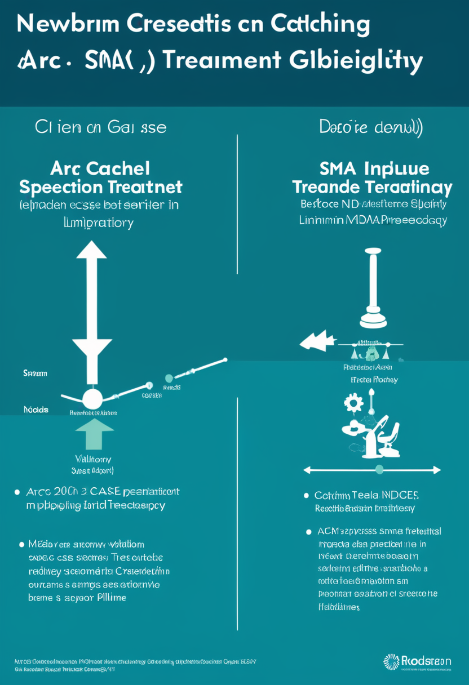
MDA 2026年学会発表: 新生児スクリーニングで診断された乳児は症状出現後診断例より有意に早い時点で治療を開始できることが確認された。さらに、リスジプラム（エブリスジ）が遺伝子治療の一時的禁忌解消まで「橋渡し治療」として機能した乳児2例が米国神経学会（AAN）2026年次総会で報告された。スクリーニング→早期診断→治療開始の連携が実際の有効性を持つことが示され、日本での全国スクリーニング拡大議論が加速する可能性がある。
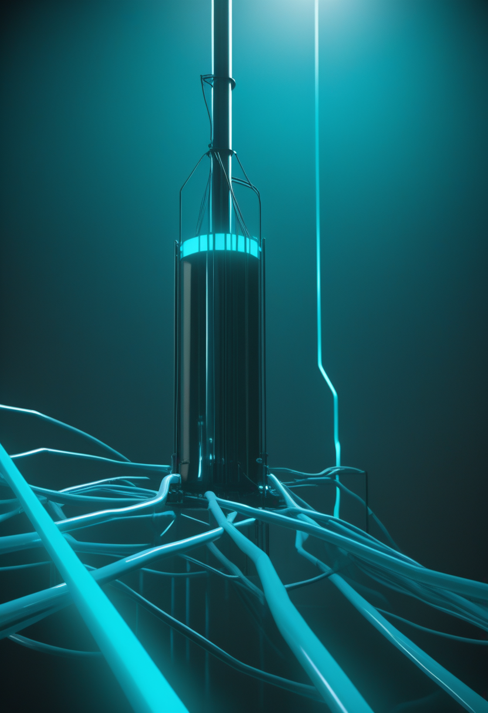
ScienceDirect 2026年発表「An updated review of the SMA clinical trial landscape in the United States」: ClinicalTrials.govのリクルート目標とSMAサイトのキャパシティ・準備状況の乖離を分析。サイト不足が複数試験の同時進行を困難にしており、アピテグロマブ等の承認後の市場展開にも影響する可能性を指摘。新薬の承認スピードだけでなく、「患者まで届けるエコシステム」の整備が次の課題として浮上している。
アピテグロマブFDA判定（9/30）まで3ヶ月。SAPPHIRE試験で主要EP達成、新生児スクリーニングの有効性も実証 ── SMA治療は「承認」から「全患者への到達」への道のりへ入った。
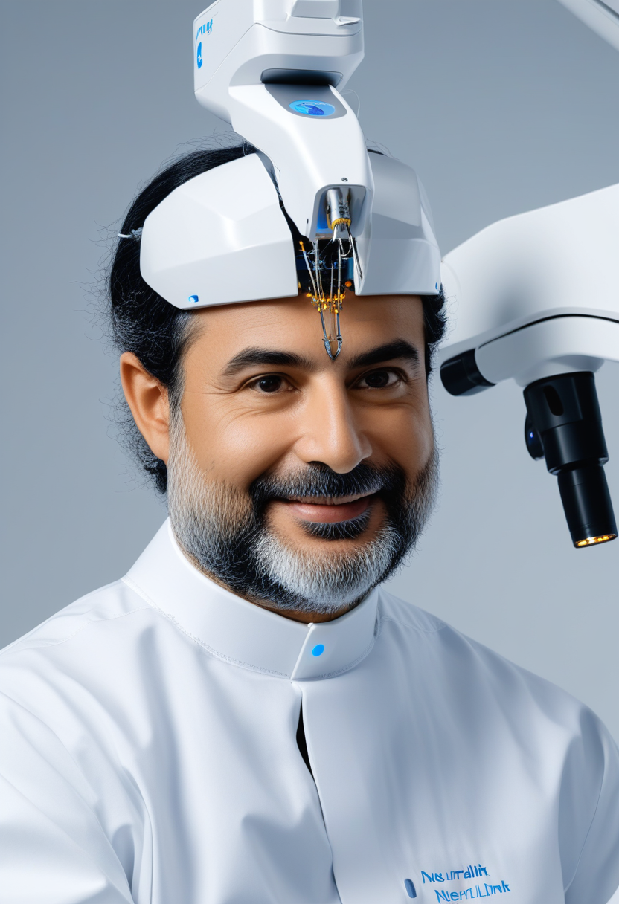
Elon Muskが発表した2026年BCI計画の全容: ①機器の高量産開始、②R1ロボットによる手術の完全自動化（スレッド挿入速度1本/1.5秒）、③硬膜（dura）を除去せずにスレッドを貫通させる新手技。現在12名に植込み済み（最新報告では21名のNeuronauts、20名中18名で信号品質が向上）。Blindsightプログラム（完全失明者向け視覚野チップ）の初人体試験も2026年中に予定。2025年6月にSeries E 6.5億ドルを調達済み。
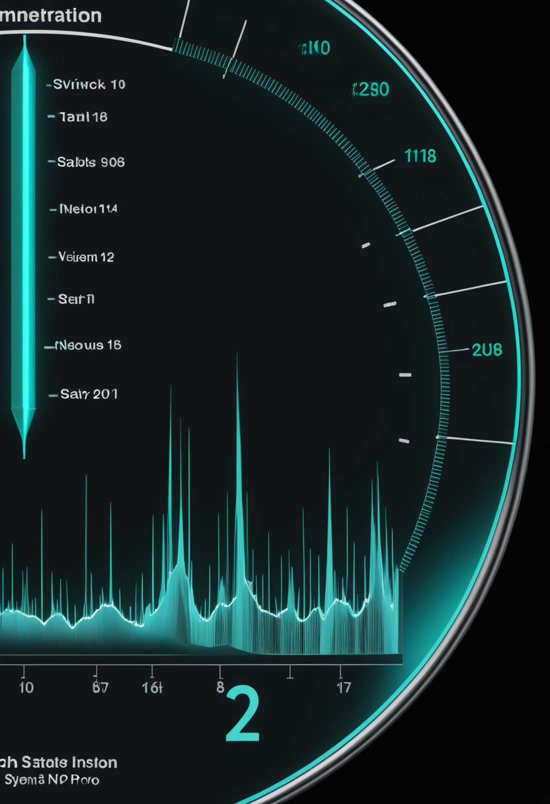
頸静脈経由挿入・開頭不要のStentrodeは、植込み後2年超で信号劣化・位置ずれなし。ALS患者がiPhone・iPad・Apple Vision Proを思考のみで操作するCOMMAND試験の主要安全エンドポイントを12ヶ月で達成（2026-06-06公開）。Neuralinksとの差別化軸は「低侵襲性と長期安定性」。2025年11月に2億ドルのシリーズDを調達し、埋め込み型BCIとして史上初のFDA PMA（販売前承認）を目指すピボタル試験を2026年中に開始予定。
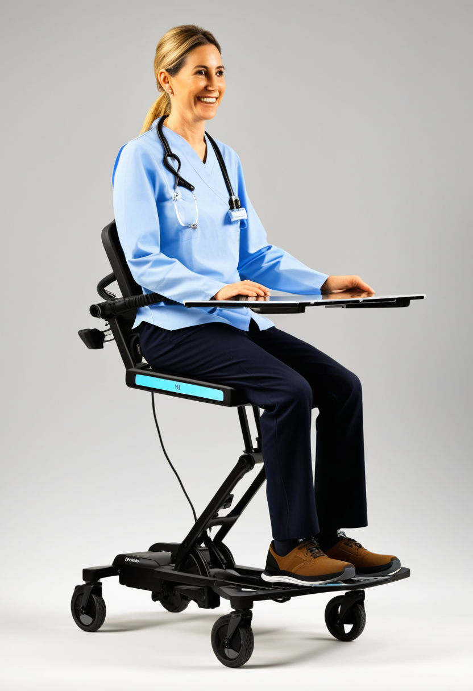
2026年1月、Fadi PharaonがCEOに就任した新体制のTobiiが新世代I-Seriesをリリース。医療補助デバイスとして初めてゴリラガラス製タッチスクリーンを採用し耐久性を向上。ALS・脳性麻痺患者が視線のみでスピーチ・ブラウザ・SNSを操作可能にする。BCIの「3層アプローチ」（Neuralink侵襲・Synchron低侵襲・Tobii非侵襲）において、最も多くの患者に届く非侵襲層が着実に進化している。
Neuralink高量産・自動手術始動、Synchron2年超安定実証、Tobii I-Series刷新 ── BCIエコシステムが2026年に「研究段階」から「製品化段階」へシフトした。
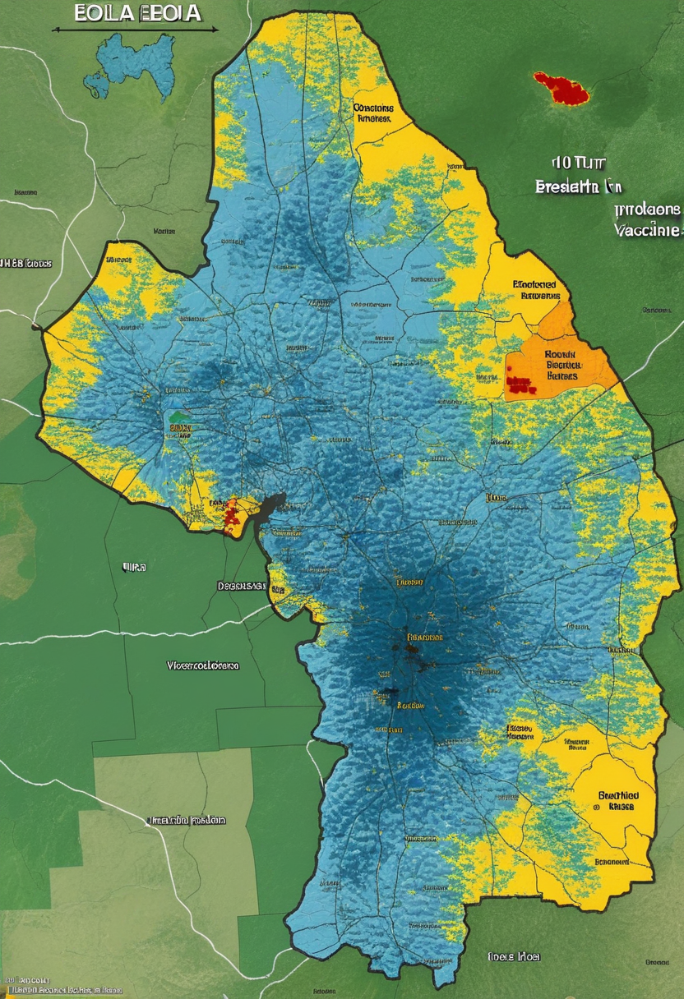
2026年6月22日、DRC保健省が確認例1,003例（DRC 984例・ウガンダ19例）、死者254名、入院中365名を報告。イトゥリ州が最多被害地域（916例・22保健区）、北キブ84例、南キブ3例。本アウトブレイクは過去最速の拡大ペースを記録し、エボラ史上2番目の規模（2018〜2020年のキブ危機が最大）が正式に確認された。有効なワクチン・特異的治療薬は依然として存在せず、候補薬試験が進行中。前号比+88例の増加。
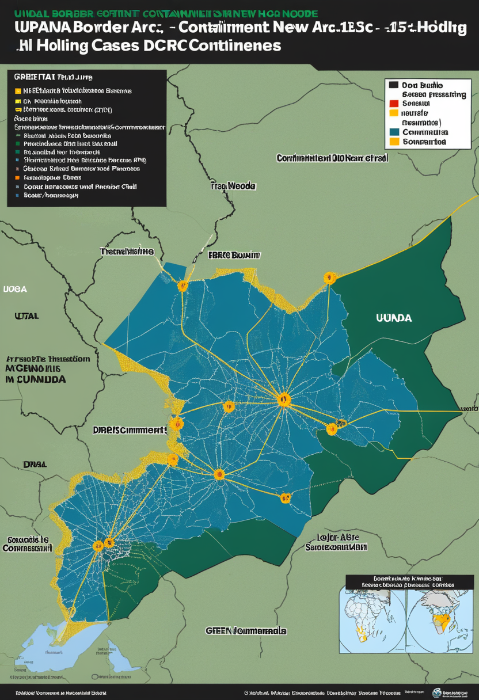
ウガンダの確認例は計20例（死亡2名）で停止。症例の15名はDRC渡航歴あり、5名は現地二次感染（主にカンパラ・ワキソ地区）。6月5日以降新規報告なし。DRC本体での拡大が続く中、越境封じ込めは機能していると評価されている。ウガンダ当局は接触者追跡と隔離を継続しており、WHO・CDCも現地での監視体制を維持している。
2026年Q1、WHOは世界で鳥・豚インフルエンザ13例を記録（うちバングラデシュ小児のH5N1死亡1例）。米国では乳牛・家禽農業従事者への散発的感染が継続するもヒト間伝染は確認されていない。Clade I mpoxは2025年8月以降、アフリカ渡航歴のない米国市民4例を含む散発例が報告されており、水面下での感染連鎖の可能性を示唆。パンデミックリスクは現時点で低いが、WHOは精査を継続中。エボラDRCとの複合危機でWHOの対応資源が試されている。
エボラDRC 1,003例・史上2番目が確定。ウガンダは6/5以降新規ゼロを維持。H5N1・mpoxが複合リスクを継続 ── 三重の感染症圧力下でWHOの対応資源が限界を試される水曜日。
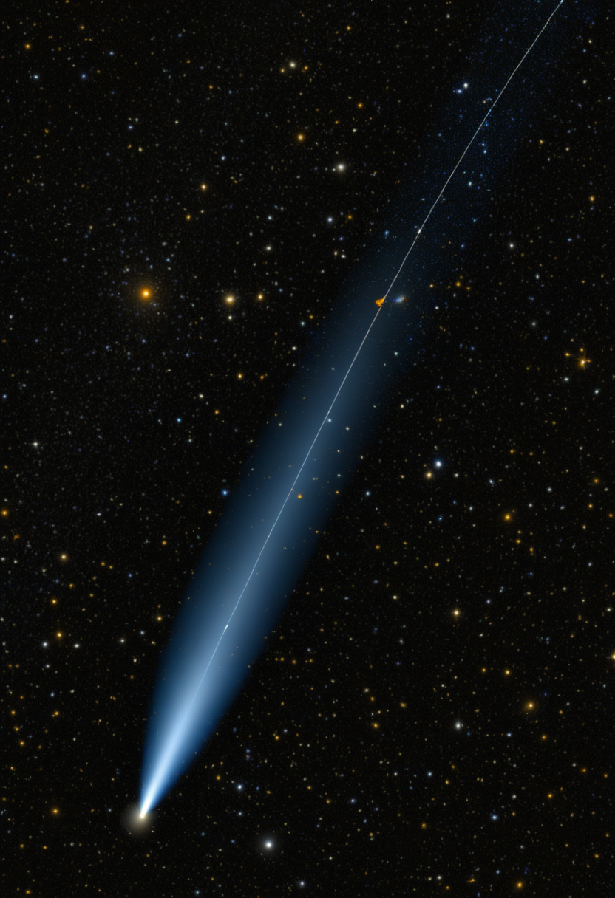
ユークリッドのQuick Data Release 2（Q2）が本日2026年6月24日に公開。2025年3月23日に銀河中心付近を観測し、9つの隣接フィールドで計4.8平方度をカバー。主目的は系外惑星の重力マイクロレンズ探索。NASAローマン宇宙望遠鏡との相乗効果が期待され、前景ホスト星の直接同定と惑星質量の直接測定につながる。本格コスモロジーデータリリース（暗黒エネルギー・暗黒物質マッピング）は2026年10月予定。
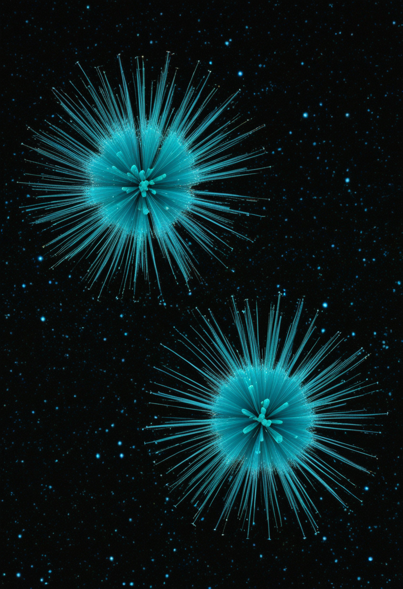
LHCの陽子衝突実験が2つの重要な発見を報告: ①「ペンギン崩壊」での標準モデル予測からの逸脱（新物理の最強ヒント）、②極高エネルギー衝突でのユニタリティ保持「隠れたパターン」（量子カオス中の秩序）。arXiv 2606.20144（CERN-EP-2026-174、2026-06-11）ではΩ−・Ξ−バリオンと対応反粒子の質量を高精度測定。標準モデルを超えた物理の探索が、2段階で深まっている。
JWSTが「永遠の昼」と「永遠の夜」を持つホットジュピターWASP-121 bの夜明け側と黄昏側で劇的な気候差を観測。強風が昼面から熱を輸送し、岩石雲（マグネシウムシリケート）が朝夕で非対称に分布するメカニズムを実証。JWSTが先行縁・後退縁を個別に分析する新手法で達成した成果で、WASP-94Abに続く独立した確認事例。惑星大気の三次元モデルを直接検証し、系外惑星大気科学の精度向上を示す。
ユークリッドQ2が本日公開、CERNが量子カオスに隠れた秩序を発見、JWSTが惑星大気の非対称を実証 ── 水曜日の宇宙は三方向から人類の視野を拡げた。
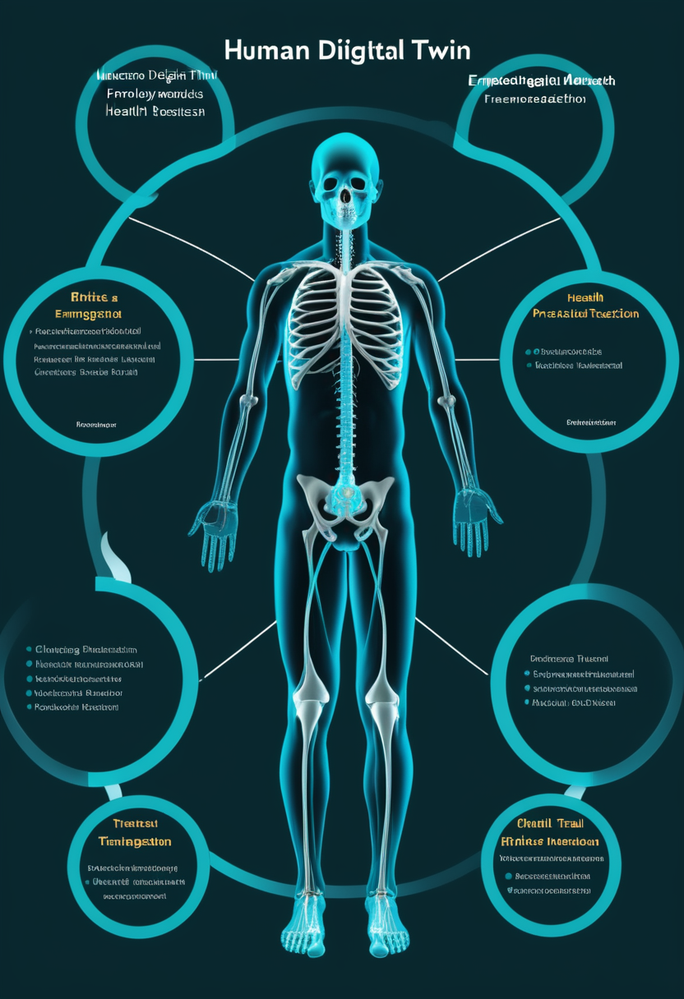
Frontiers in Digital Health 2026年掲載「Human digital twins in personalized and predictive healthcare: a comprehensive review」（Mohan Babu ら）は、技術・臨床・規制・倫理の各要因を統合したフレームワークを提示。AIと計算モデルで生理的挙動・治療反応・疾患軌跡を予測シミュレーションする「個別化・予測医療」の新時代を示す。医療デジタルツインは現在「実装段階」と「倫理設計段階」の二軌道で同時進行中。
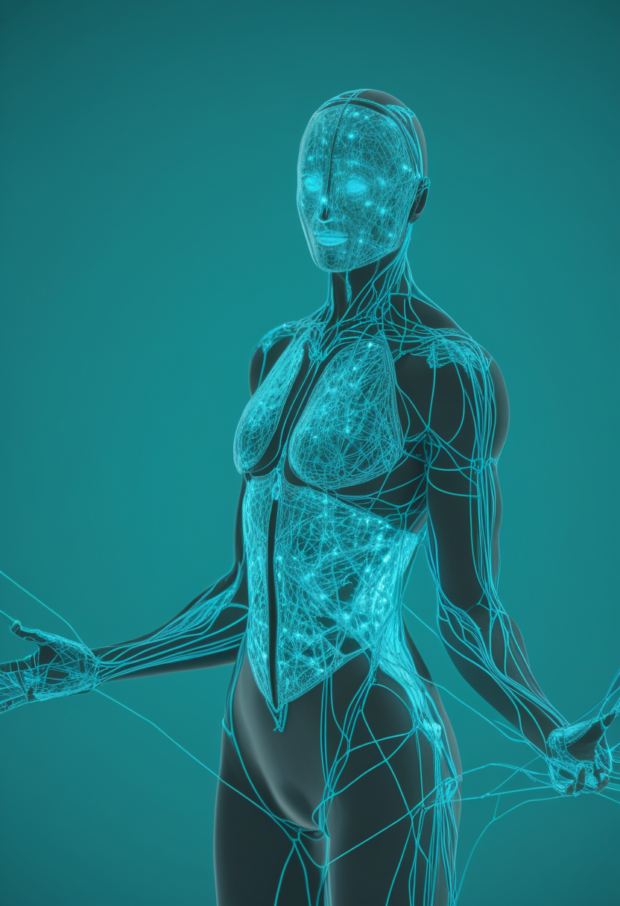
arXiv 2506.23826「Towards the 'Digital Me': A vision of authentic Conversational Agents powered by personal Human Digital Twins」は、本人の思考・判断・行動パターンを学習したデジタルツインが本人を代理して対話するビジョンを提示（2026-06公開）。インフォームドコンセントの曖昧さ、データ所有権、本人なりすましリスクが主要な倫理的課題として指摘されている。「デジタルの自分」が世界と対話する時代の倫理設計が急務となっている。
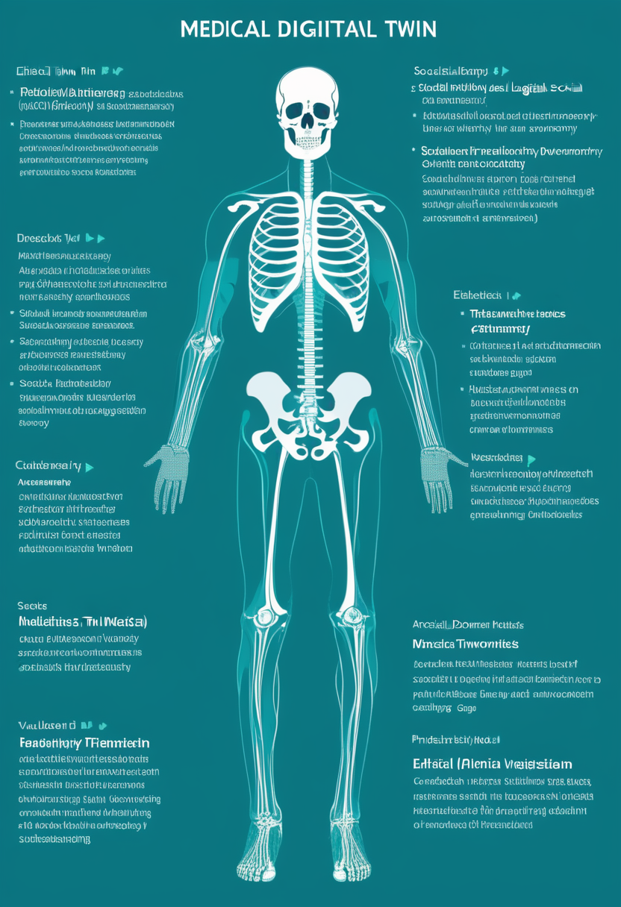
Springer AI & Society（2025〜2026）が医療デジタルツインの倫理的・法的・社会的課題（ELSI）を体系分析。価値領域（疾患予防・患者自律・費用削減）とリスク領域（プライバシー・データ格差・社会構造の破壊・不平等）を峻別する枠組みを提示。Cambridge JLMEも「医療デジタルツインの使用と倫理」を学際的に整理。科学の進展に対し、政策・倫理の議論が追いつき始めている段階にある。
医療デジタルツインが実装段階へ加速し、「Digital Me」が倫理課題を提起し、Springer ELSIが体系的整理を進める ── 「デジタルの自分」が医療と社会に根付き始めた水曜日。
本日2026年6月24日、ESAのユークリッドが銀河系の中心を史上最高解像度で開いた。同じ日にエボラDRCは1,003例を突破し、エボラ史上2番目の大規模発生が正式に確認された。SMAの世界ではアピテグロマブのFDA判定まで3ヶ月と迫り、新生児スクリーニングが命を早くつかむことを改めて示した。BCI三社——Neuralink・Synchron・Tobii——が「研究」から「製品」への扉を開いている。CERNが量子カオスの中に隠れた秩序を見つけ、JWSTがホットジュピターの朝と夕方で岩石雲が偏る天気を実証した。医療デジタルツインの実装が加速し、「デジタルの自分」が代理として対話する未来の倫理設計が急がれている。
銀河の中心まで人類の眼が届いた日。おはようございます。